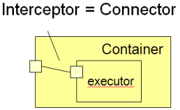
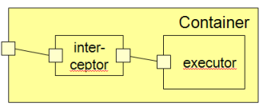
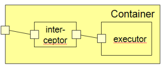
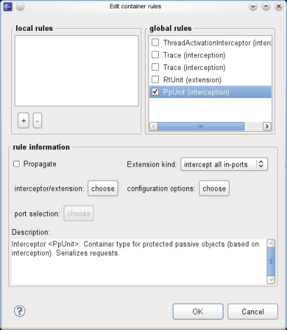

Qompass container development
A container encapsules a component, i.e. it encloses an existing components and delegates ports to
it. The following figure depicts a container enclosing an component. The principal idea is that the
container handles the treatment of non-functional properties. Therefore, the existing component can
focus on the implementation of the business logic. It is therefore also called executor, a term
introduced by the OMG standard CORBA component model (CCM).
There are two different ways how a container can influence the execution of an executor. Either via
interception or via extension. The two variants are shown in the sequel.
How to create a container interceptor
A container interceptor is basically a delegation connector between a port of the container and the
executor. Thus, it can be defined in the same way as a connector, but needs to carry the stereotype
interceptor.

 

Further expansion as for a connector
Container rules
A container rule defines which container extensions and/or interceptors should be applied. The
concept of a container rule has been introduced, since some aggregation/interceptor combinations
depend on each other. Their independ selection would be error prone, instead a single container
rule selects the combination.
There are two different kinds of rules:
- local rules that are only visible to a component owning them
- global rules that are visible for all models that import the model library. In both
cases, the container rule is principally a stereotyped UML class. In the first case, it is a
sub-class owned by the component, which is typically created by the container rule dialog available
for the package. In the second the container rule is a normal class owned by a package; use the Qompass
palette to create the rule. Then, right on the rule to edit its properties.
